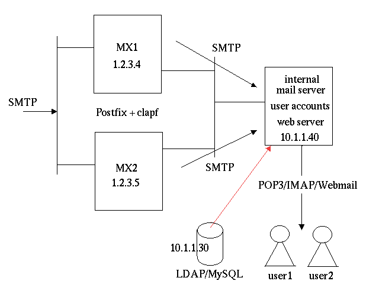

Configuration examples
Clapf is designed to be as flexible as possible. Thanks to its modular design, it supports several configurations from an all in one box setup to even a distributed enterprise configuration. I describe the latter setup suitable for even a medium size company.The MX setting of your domain points to MX1 and MX2 running postfix and clapf:
MX 10 mx1.yourdomain.com MX 20 mx2.yourdomain.comor if you want load sharing:
MX 10 mx1.yourdomain.com MX 10 mx2.yourdomain.com

Figure 1.
Spam is forwarded to the users' private spam quarantine. User account info is stored in an external LDAP directory or MySQL database. Users may use a web browser to manage their own spam quarantine.
Configuration of the postfix daemon on MX1:
/etc/postfix/master.cf:
....
127.0.0.1:10026 inet n - n - 10 smtpd -o content_filter=
-o receive_override_options=no_address_mappings
/etc/postfix/main.cf:
....
smtpd_recipient_limit = 101
content_filter = smtp:[127.0.0.1]:10025
default_destination_concurrency_limit = 10
transport_maps = hash:/etc/postfix/transport
relay_recipient_maps = hash:/etc/postfix/relay_recipients
relay_domains = yourdomain.com
/etc/postfix/transport:
yourdomain.com smtp:10.1.1.40:25
/etc/postfix/relay_recipients:
@yourdomain.com x
And the configuration of clapf:
hostid=av-engine.localhost listen_addr=127.0.0.1 listen_port=10025 postfix_addr=127.0.0.1 postfix_port=10026 spam_smtp_port=127.0.0.1 spam_smtp_addr=10026 workdir=/opt/av use_blackhole=0 verbosity=1 use_antispam=1 tokensfile=/opt/av/tokens.cdb max_message_size_to_filter=128000 surbl_domain=multi.surbl.org rude_surbl=1 clapf_header_field=X-Clapf-spamicity: spam_overall_limit=0.92 use_single_tokens_min_limit=0.81 min_deviation_to_use_single_tokens=0.1 spaminess_of_strange_language_stuff=0.9876 spaminess_of_too_much_spam_in_top15=0.9998 spaminess_of_blackholed_mail=0.9995 spaminess_of_text_and_base64=0 spaminess_of_caught_by_surbl=0.9997 use_all_the_most_interesting_tokens=1 spam_ratio_in_top10=0.9 invalid_junk_limit=7 invalid_junk_line=1 invalid_hex_junk_limit=20 max_junk_spamicity=0.15 mysqlhost=10.1.1.30 mysqlport=3306 mysqluser=clapf mysqlpwd=xxxxxxx mysqldb=clapf mysqltokentable=t_token mysqlmisctable=t_misc mysqlblackholetable=blackhole mysqlusertable=userOf course you may define the LDAP parameters, if you want to use LDAP instead of MySQL.
This configuration makes the spam quarantine a little tricky. Copy the passmail utility to the internal mail server (10.1.1.40) and install maildrop there. Copy the CGI utilities to the web server running on the internal mail server, then create a configuration file for passmail:
/usr/local/etc/clapf.conf: ; regular mysql settings mysqlhost=10.1.1.30 mysqlport=3306 mysqluser=clapf mysqlpwd=xxxxxxx mysqldb=clapf mysqltokentable=t_token mysqlmisctable=t_misc mysqlblackholetable=blackhole mysqlusertable=user ; path of the spam quarantine spam_quarantine_dir=/opt/av/spamquarantine ; cgi stuff relocate_timeout=5 relocate_url=http://clapf.yourdomain.com/train/index.html spamcgi_url=http://clapf.yourdomain.com/cgi-bin/quarantine/spamcgi traincgi_url=http://clapf.yourdomain.com/cgi-bin/quarantine/traincgi spam_mail_from=spamquarantine@yourdomain.com ; use this mail server to deliver spam to the user's mailbox spam_smtp_addr=10.1.1.40 spam_smtp_port=25The spam quarantine with the web server can be on a separate computer other than the internal mail server. In this case set spam_smtp_addr and spam_smtp_port to point to the web server box (eg. spam_smtp_addr=10.1.1.32 and spam_smtp_port=25) to have both MX1 and MX2 deliver spam to this computer. This complicates the setup so feel free to contact me for help.